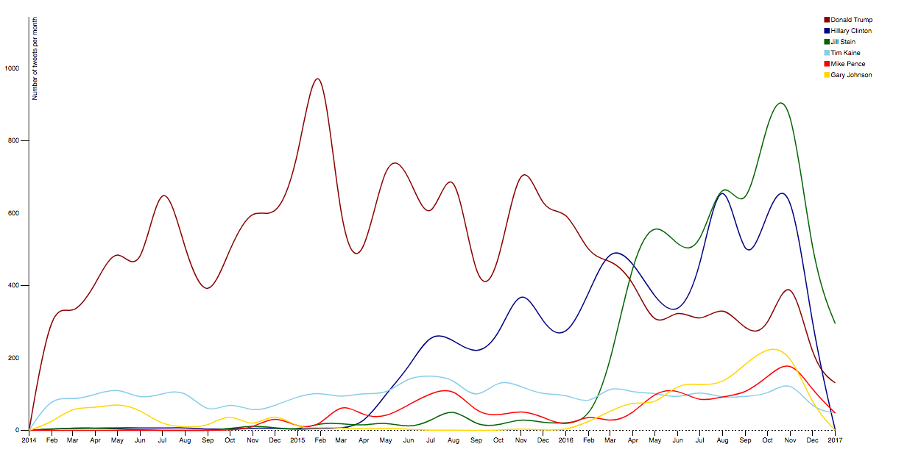

I wanted to explore the Twitter data of U.S. presidential candidates to find out which topics did they talk about most on the social media platform.
I used the script from this Kaggle webpage to download ~50,000 total tweets of Donald Trump, Hillary Clinton, Jill Stein, Mike Pence, Gary Johnson and Tim Kaine from January 2014 through December 2016. After that, Python was used to categorize the tweets through keyword analysis. The visualization was done entirely in D3.js.
The trend in total number of tweets per month by different candidates can be visualized interactively below. The cursor can be used to identify the number of tweets at the end of a month.
We observe some interesting trends here:
The first step was identifying keywords by searching through online news articles about important issues which were discussed in U.S. Presidential Elections 2016 and then further categorizing them into broad categories such as:
The analysis of tweets by different categories can be well-summarised by the interactive visualizations below. The comparison of presence of the presidential candidates in different categories can be explored through the donut chart, and a summary by each candidate can be explored by the histogram.
We see that Donald Trump had the highest total number of tweets, and had the highest category presence in foreign policy, campaign controversies and people. Hillary Clinton tweeted the most among all the candidates about domestic policy and social issues. Jill Stein had the highest category presence in economy and trade, energy and environment and education, while Tim Kaine tweeted the most about electoral reforms.
Furthermore, the issues talked about the most can be visualized interactively by the Sankey diagram below. The individual nodes can be dragged for better visibility and the tooltip feature on the links and nodes can be used to find the number of tweets.
It is interesting to note that the highest number of tweets referenced Barack Obama, with Donald Trump tweeting about him 357 times. Climate change was another main topic of discussion, followed by jobs, tax, voter, immigration, military, guns and debt related issues. The main issues tweeted about by the candidates are as follows: